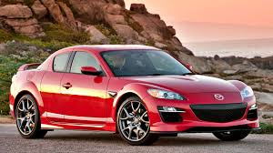

Overview
The Mazda RX-8 is a unique sports car known for its rotary engine, stylish design, and balanced performance. It stands out due to its distinctive engine and rear-hinged freestyle doors, offering both sportiness and practicality.
Key Features
- Engine: 1.3L Renesis Rotary Engine
- Transmission: 5-speed / 6-speed Manual or Automatic
- Drive: Rear-Wheel Drive (RWD)
- Horsepower: 197–232 hp
- Fuel Type: Petrol
- Seating Capacity: 4
- Interior: Sporty cabin with bucket seats, central tachometer
- Safety: ABS, Airbags, Stability Control
Variants Available
- Standard RX-8
- RX-8 Sport
- RX-8 Grand Touring
- RX-8 R3 (Performance Edition)
Price Range (2025 Estimate)
Used market prices vary between USD $6,000–$20,000 depending on condition and model year.
Why People Love RX-8
- Unique rotary engine experience
- Sharp handling and good balance
- Stylish and sporty look
- Affordable entry into sports car ownership
- Cult following and tunability